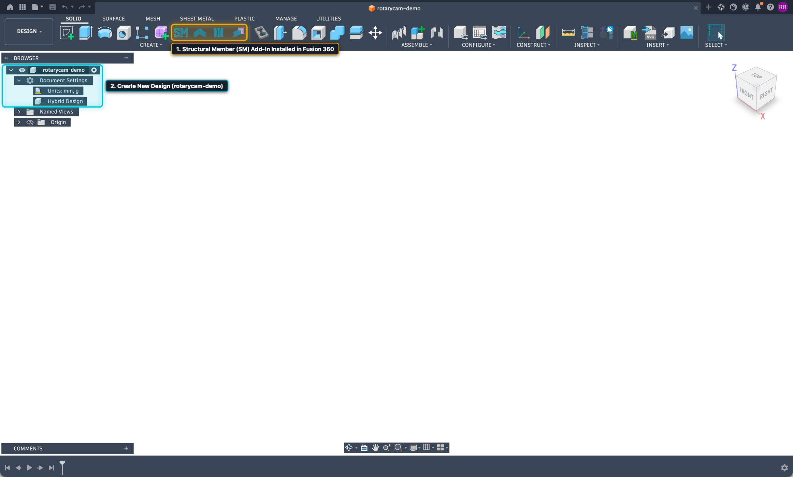

Step 01
Open Autodesk Fusion 360 & Verify the Structural Member Add-In
Launch Autodesk Fusion 360 and create or save a new design document (for example, rotarycam-demo):
- 1. Verify the Structural Member Toolbar Icons: In the DESIGN → SOLID → CREATE ribbon, confirm that the four blue Structural Member icons (SM Structural Member, Miter, Notch, and Trim/Extend) are visible.
- 2. Document Units: In the left Browser tree under Document Settings, you can work in millimeters (
mm, g) or inches—while selecting standard imperial or metric tube profiles inside the Structural Member library.
